BUCCARI BC-05 Kaffeevollautomat. Bedienungsanleitung
Bitte lesen Sie diese Anleitung vor dem Gebrauch sorgfältig durch und bewahren Sie sie zum späteren Nachschlagen auf.
1. Einleitung
- Vielen Dank, dass Sie sich für den BUCCARI BC-05 entschieden haben, die neueste Generation unserer Kaffeevollautomaten, gebaut auf den Kerntechnologien der Marke.
- Diese Anleitung erklärt die Bedienung und Reinigung des Kaffeevollautomaten. Der Hersteller haftet nicht für Schäden, die durch eine Nutzung entstehen, die nicht dieser Anleitung entspricht.
- Ein zuverlässiger Betrieb setzt richtige Bedienung und Pflege voraus. Lesen Sie diese Anleitung vor dem ersten Gebrauch sorgfältig und bewahren Sie sie griffbereit auf. Genießen Sie Ihren Kaffee!
- Jedes Gerät wird im Werk vollständig getestet, daher ist eine kleine Menge Kaffeemehl im Gerät normal. Wir garantieren, dass das Gerät neu ist.
2. Sicherheitshinweise
Sicherheit ist eines der wichtigsten Merkmale des BC-05. Die Sicherheitseinrichtungen sind nur wirksam, wenn Sie die folgenden Hinweise zur Vermeidung von Verletzungen und Gesundheitsgefahren befolgen.
2.1 Gefahren für den Benutzer
Achtung. Unsachgemäßer Gebrauch des Kaffeevollautomaten kann zu leichten Verletzungen führen. Befolgen Sie unbedingt diese Regeln:
- Lesen Sie diese Anleitung vor dem Gebrauch sorgfältig durch.
- Verwenden Sie den Kaffeevollautomaten nicht, wenn er defekt oder beschädigt ist.
- Verändern Sie die eingebauten Sicherheitseinrichtungen nicht.
- Berühren Sie keine heißen Teile des Geräts.
- Kinder ab 8 Jahren sowie Personen mit eingeschränkten körperlichen, sensorischen oder geistigen Fähigkeiten oder mangelnder Erfahrung dürfen das Gerät nur unter Aufsicht benutzen oder wenn sie von einer verantwortlichen Person in den sicheren Gebrauch eingewiesen wurden und die damit verbundenen Gefahren vollständig verstanden haben.
- Lassen Sie Kinder nicht mit dem Gerät oder in seiner Nähe spielen. Kinder unter 15 Jahren dürfen es nur unter Aufsicht eines Erwachsenen benutzen.
- Halten Sie das Gerät und sein Netzkabel von Kindern unter 8 Jahren fern.
- Stellen Sie den Kaffeevollautomaten so auf, dass er leicht zu kontrollieren und regelmäßig zu warten ist.
- Füllen Sie nur Kaffeebohnen in den Bohnenbehälter. Verwenden Sie niemals gemahlenen Kaffee.
Stromschlaggefahr. Unsachgemäßer Gebrauch des Kaffeevollautomaten kann zu schweren Verletzungen führen. Beachten Sie stets Folgendes:
- Halten Sie die Niederspannungsrichtlinien sowie die nationalen und örtlichen Sicherheitsvorschriften ein.
- Achten Sie beim Anschluss darauf, dass das Gerät ordnungsgemäß geerdet ist.
- Die Netzspannung muss mit der Spannung auf dem Typenschild des Geräts übereinstimmen.
- Berühren Sie keine stromführenden Teile.
- Schalten Sie vor jeder Wartung den Hauptschalter aus und ziehen Sie den Netzstecker.
- Das Netzkabel darf nur von qualifiziertem Servicepersonal ausgetauscht werden.
Verbrennungsgefahr. Unsachgemäßer Gebrauch des Kaffeevollautomaten kann zu leichten Verletzungen führen.
- An den Ausgabestellen für Getränke, Heißwasser und Dampf besteht Verbrennungsgefahr. Halten Sie Ihre Hände während des Betriebs und der Reinigung vom Kaffeeauslauf fern.
- Der Kaffeeauslauf und die Brüheinheit werden sehr heiß. Fassen Sie nur die dafür vorgesehenen Griffe an. Reinigen Sie die Brüheinheit erst, wenn das Gerät vollständig abgekühlt ist.
2.2 Gefahren für das Gerät
Achtung. Die Missachtung dieser Warnungen kann zu einem lebensgefährlichen Stromschlag führen. Beachten Sie stets Folgendes:
- Schalten Sie das Gerät nicht mit leerem Wassertank ein.
- Reinigen Sie den Kaffeevollautomaten nach längerer Nichtbenutzung (zum Beispiel nach dem Urlaub) gründlich, bevor Sie ihn wieder verwenden.
- Schützen Sie Kaffeebohnen vor ungünstigen Bedingungen wie Frost und Feuchtigkeit.
- Störungen dürfen nur von qualifizierten Technikern behoben werden.
- Verwenden Sie nur Originalzubehör des Herstellers.
- Bei sichtbaren äußeren Schäden oder austretender Flüssigkeit wenden Sie sich sofort an den Kundendienst zur Reparatur oder zum Austausch.
- Spülen Sie das Gerät nicht unter fließendem Wasser ab und reinigen Sie es nicht mit einem Dampfreiniger.
- Stellen Sie das Gerät nicht auf spritzwasserempfindliche Oberflächen.
- Füllen Sie nur Kaffeebohnen in den Bohnenbehälter. Verwenden Sie niemals gemahlenen Kaffee.
- Wurden Kaffeevollautomat und Zubehör bei unter 10 °C transportiert, lassen Sie sie vor dem Anschließen und Einschalten 3 Stunden bei Raumtemperatur stehen.
2.3 Hygiene: Wasser
Achtung. Ungeeignetes Wasser kann Ihrer Gesundheit schaden. Beachten Sie stets Folgendes:
- Verwenden Sie nur sauberes, unbelastetes Wasser.
- Füllen Sie kein korrosives Wasser in den Kaffeevollautomaten.
- Die Karbonathärte darf 5–6 °dKH bzw. 8,9–10,7 °fH nicht überschreiten.
- Chlorgehalt: höchstens 100 mg/l.
- pH-Wert: 6,5–7 (neutral).
3. Produktbeschreibung
3.1 Geräteübersicht
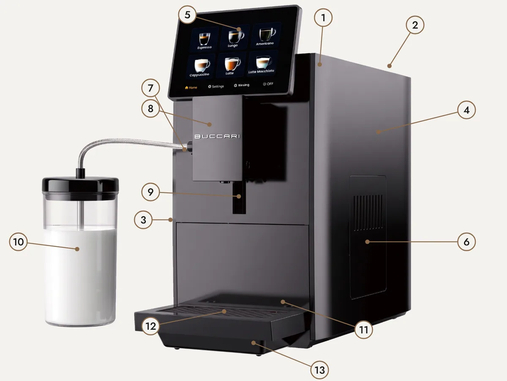
- Deckel des Bohnenbehälters
- Deckel des Wassertanks
- Linke Seitenwand
- Rechte Seitenwand
- TFT-Touchscreen
- Seitentür
- Milchaufschäumer
- Auslaufabdeckung
- Kaffeeauslauf
- Milchbehälter (optional)
- Schwimmer der Abwasserschale
- Tropfschale
- Abdeckung der Abwasserschale
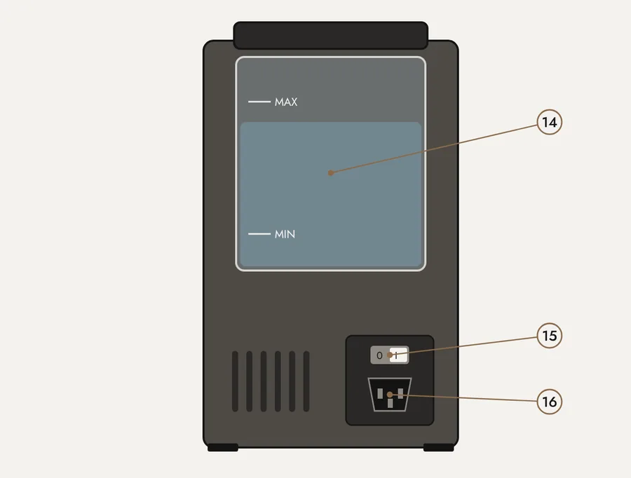
- Wassertank
- Netzschalter
- Netzbuchse
3.2 Technische Daten
| Merkmal | Wert |
|---|---|
| Modell | BC-05 |
| Nennspannung / Frequenz | 220–240 V, 50/60 Hz |
| Leistung | 1350 W |
| Fassungsvermögen Wassertank | 1,2 l |
| Fassungsvermögen Bohnenbehälter | 250 g |
| Fassungsvermögen Tresterbehälter | 10 Portionen |
| Abmessungen (L × B × H) | 425 × 181 × 377 mm |
3.3 Lieferumfang
| Zubehör | Menge |
|---|---|
| Netzkabel | 1 |
| Bedienungsanleitung | 1 |
| Reinigungsbürste | 1 |
| Reinigungsnadel | 1 |
| Reinigungsbürste für das Dampfrohr | 1 |
| Milchbehälter (optional) | 1 |
4. Aufstellung und Inbetriebnahme
4.1 Aufstellung
Standort. Das Gerät kann beschädigt werden, wenn diese Bedingungen nicht erfüllt sind:
- Lassen Sie über dem Gerät genug Platz, um Bohnen und Wasser nachzufüllen.
- Halten Sie zur Belüftung mindestens 8 cm Abstand zwischen Geräterückseite und Wand.
Klima. Das Gerät kann beschädigt werden, wenn diese Bedingungen nicht erfüllt sind:
- Umgebungstemperatur von +10 °C bis +40 °C.
- Relative Luftfeuchtigkeit höchstens 80 %.
- Der Kaffeevollautomat ist nur für den Gebrauch in Innenräumen bestimmt. Verwenden Sie ihn nicht im Freien; schützen Sie ihn vor Regen, Schnee und Frost.
Stromversorgung. Der elektrische Anschluss muss den Vorschriften des Einsatzlandes entsprechen. Die Netzspannung muss mit der Spannung auf dem Typenschild übereinstimmen.
Gefahr! Beachten Sie stets Folgendes:
- Betreiben Sie das Gerät nicht mit beschädigtem Netzkabel. Ein beschädigtes Kabel muss sofort von qualifiziertem Servicepersonal ersetzt werden.
- Verlängerungskabel werden nicht empfohlen. Ist eines unvermeidbar, muss der Leiterquerschnitt mindestens 1 mm² betragen.
- Verlegen Sie das Kabel so, dass niemand darüber stolpern kann. Es darf nicht über scharfe Kanten laufen, lose herabhängen, eingeklemmt werden oder auf heißen Gegenständen liegen; halten Sie es von Öl und aggressiven Reinigungsmitteln fern.
- Heben oder ziehen Sie das Gerät nicht am Kabel. Ziehen Sie den Stecker nicht am Kabel aus der Steckdose. Berühren Sie Kabel und Stecker nicht mit nassen Händen und stecken Sie keinen nassen Stecker in eine Steckdose.
4.2 Stromanschluss
Stecken Sie ein Ende des Netzkabels in die Buchse an der Geräterückseite und das andere Ende in eine Wandsteckdose.
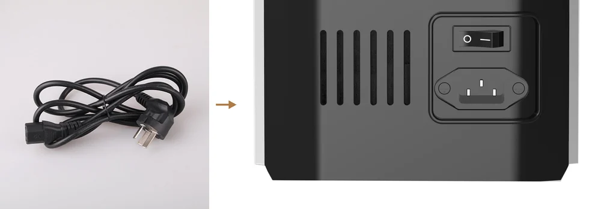
4.3 Wasser und Bohnen einfüllen
Wassertank füllen. Heben Sie den Tankdeckel an, nehmen Sie den Tank heraus, füllen Sie Wasser ein (nicht über die MAX-Markierung) und setzen Sie ihn wieder ein.
Bohnen einfüllen. Öffnen Sie den Deckel des Bohnenbehälters, füllen Sie Kaffeebohnen ein und schließen Sie den Deckel.
4.4 Erste Inbetriebnahme
- Schalten Sie das Gerät mit dem Netzschalter an der Rückseite ein. Der Startbildschirm erscheint und das Gerät führt automatisch aus: Selbsttest → Aufheizen → Spülen → Zurücksetzen.
- Beim Selbsttest prüft das Gerät den Wasserstand, die Brüheinheit, die Seitentür und die Abwasserschale. Wird ein Problem erkannt, erscheint eine Warnung; folgen Sie den Anweisungen auf dem Bildschirm.
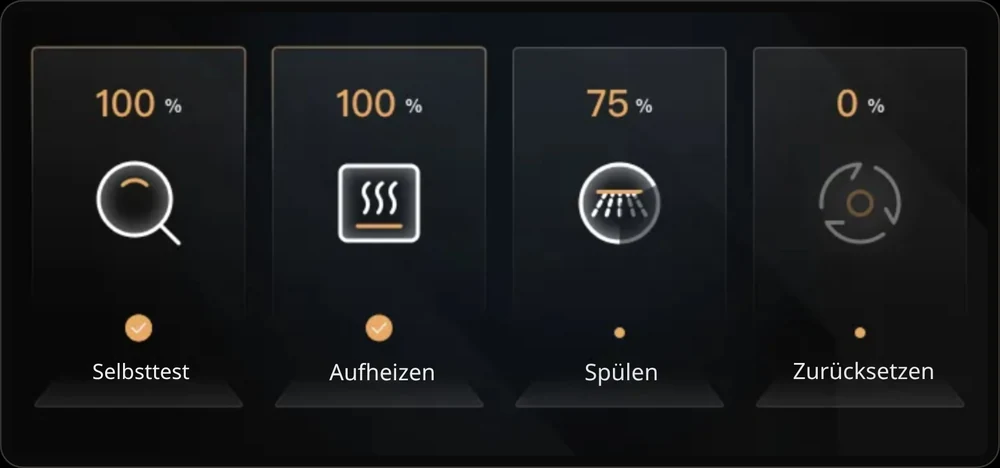
5. Getränkezubereitung
Das Getränkemenü hat zwei Seiten. Mit den Pfeilen ‹ und › wechseln Sie zwischen ihnen.
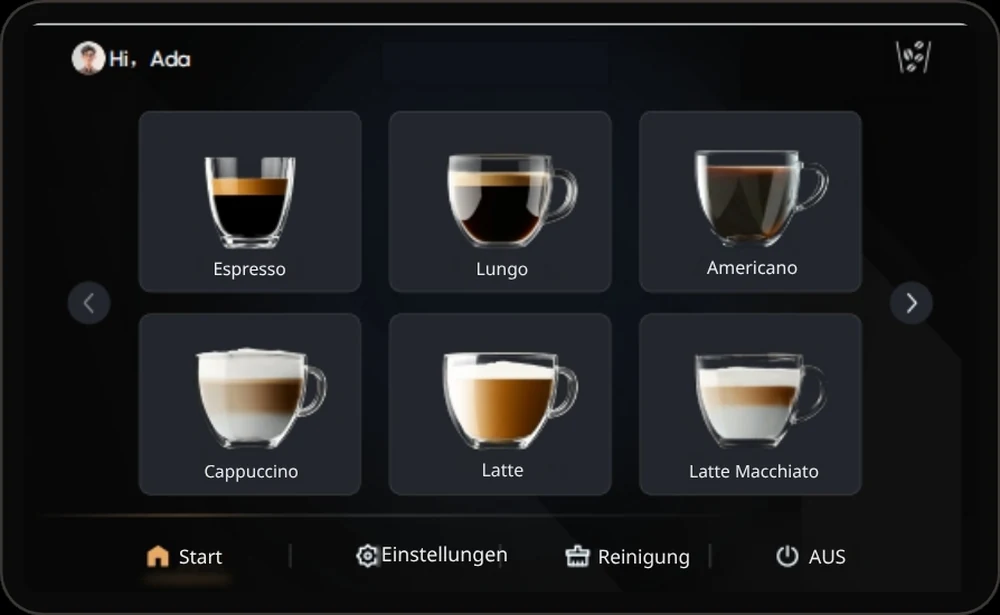
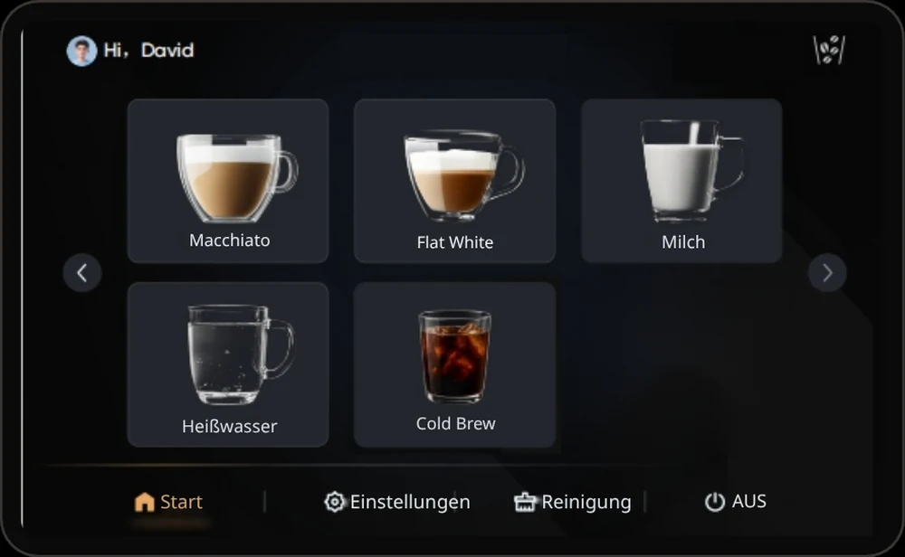
5.1 Schwarzer Kaffee (Espresso, Lungo, Americano)
- Tippen Sie auf dem Startbildschirm auf ein Getränk, um seine Einstellungen zu öffnen. Beim Espresso können Sie zum Beispiel Stärke, Brühtemperatur, Vorbrühzeit und Menge einstellen. Tippen Sie auf „Start“; die Einstellungen werden automatisch gespeichert.
- Das Gerät bereitet das Getränk zu und zeigt den Fortschritt in Prozent an. Bei 100 % erscheint das Fenster „Enjoy your coffee“ und das Getränk ist fertig. Um die Zubereitung abzubrechen, tippen Sie auf das Abbrechen-Symbol.
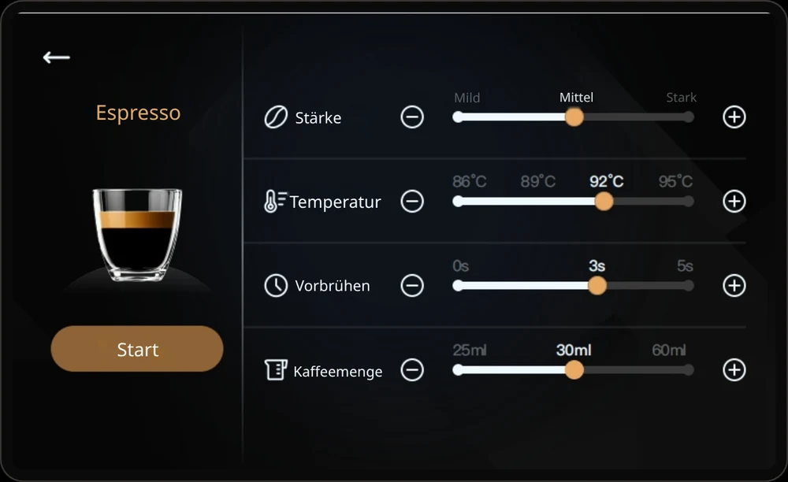
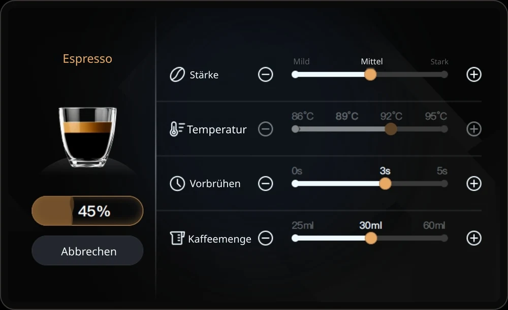
5.2 Kaffee mit Milch (Cappuccino, Latte, Latte Macchiato, Macchiato, Flat White)
- Füllen Sie Milch in den Milchbehälter (oder stecken Sie den Milchschlauch direkt bis zum Boden eines Milchkartons). Achten Sie darauf, dass der Schlauch fest mit dem Milchaufschäumer verbunden ist. Empfohlen wird gekühlte Milch mit 4–8 °C. Prüfen Sie den Aufschäumer-Drehknopf: „Froth milk“ ergibt heißen Milchschaum, „Warm milk“ ergibt heiße Milch.
- Tippen Sie auf dem Startbildschirm auf ein Getränk, um seine Einstellungen zu öffnen. Beim Latte können Sie zum Beispiel Stärke, Brühtemperatur, Vorbrühzeit, Kaffeemenge und Milchschäumzeit einstellen. Tippen Sie auf „Start“; die Einstellungen werden automatisch gespeichert.
- Der Fortschritt wird in Prozent angezeigt. Bei 100 % bestätigt eine Meldung, dass das Getränk fertig ist. Mit dem Abbrechen-Symbol können Sie jederzeit stoppen.
- Nach einem Milchgetränk fragt das Gerät, ob der Milchaufschäumer gründlich gereinigt werden soll. Wenn Sie gleich ein weiteres Milchgetränk zubereiten, tippen Sie auf „Abbrechen“. Andernfalls tippen Sie auf „Reinigen“. Siehe 7.1.3 „Tiefenreinigung des Milchaufschäumers“.
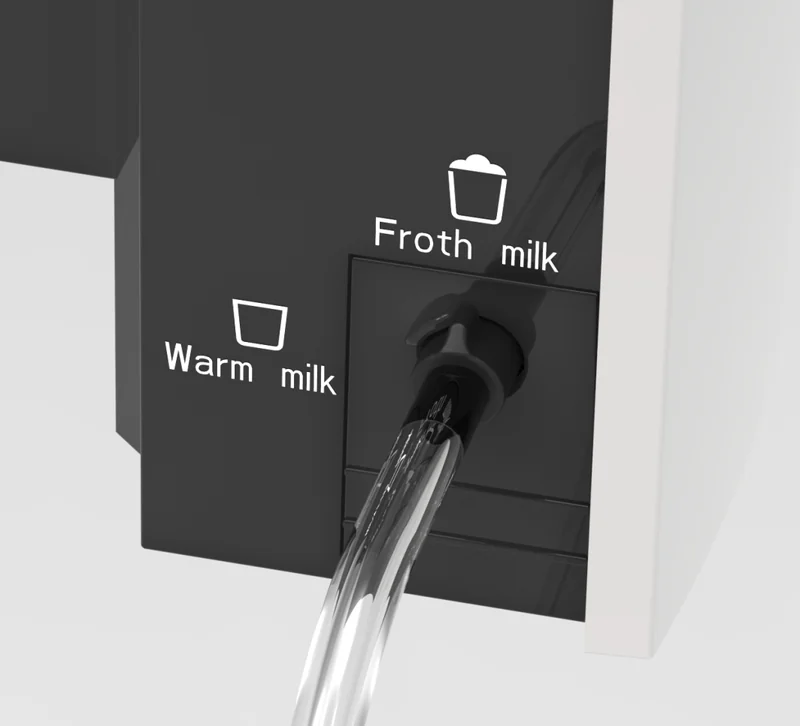
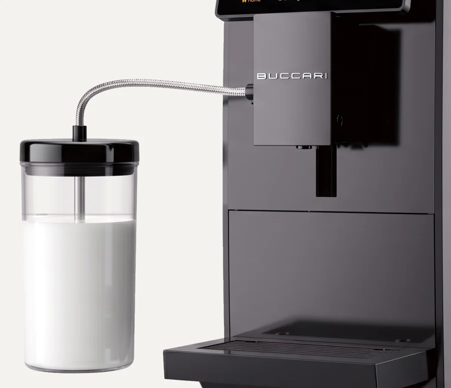
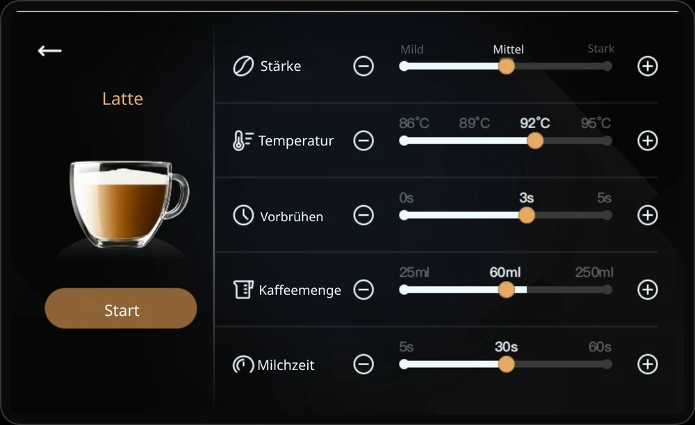
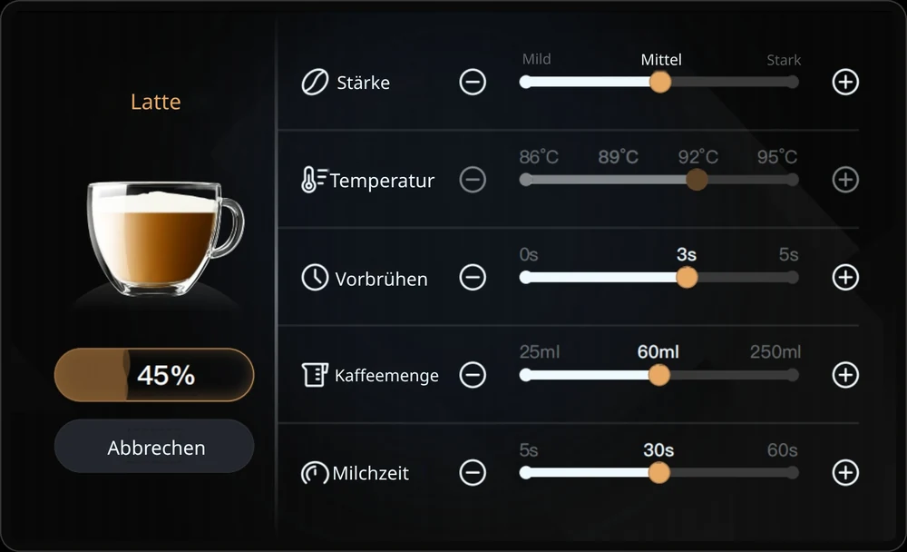
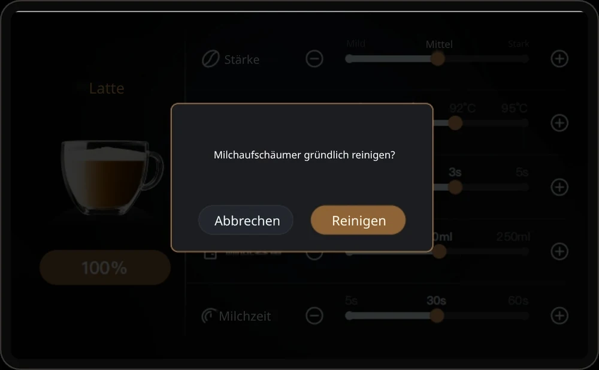
5.3 Heiße Milch und Milchschaum
- Füllen Sie Milch in den Behälter (oder stecken Sie den Schlauch bis zum Boden eines Milchkartons) und schließen Sie den Schlauch am Aufschäumer an. Empfohlen wird gekühlte Milch mit 4–8 °C. Stellen Sie den Aufschäumer-Drehknopf auf „Froth milk“ (heißer Schaum) oder „Warm milk“ (heiße Milch).
- Tippen Sie auf dem Startbildschirm auf das Milch-Symbol und stellen Sie die Zeit ein. Tippen Sie auf „Start“; die Einstellungen werden automatisch gespeichert.
- Der Fortschritt wird in Prozent angezeigt; bei 100 % bestätigt eine Meldung, dass das Getränk fertig ist. Mit dem Abbrechen-Symbol können Sie jederzeit stoppen.
- Anschließend fragt das Gerät nach der Tiefenreinigung des Milchaufschäumers; gehen Sie wie nach einem Kaffee mit Milch vor.
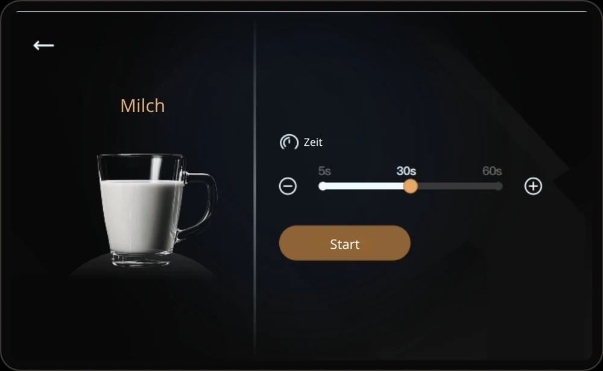
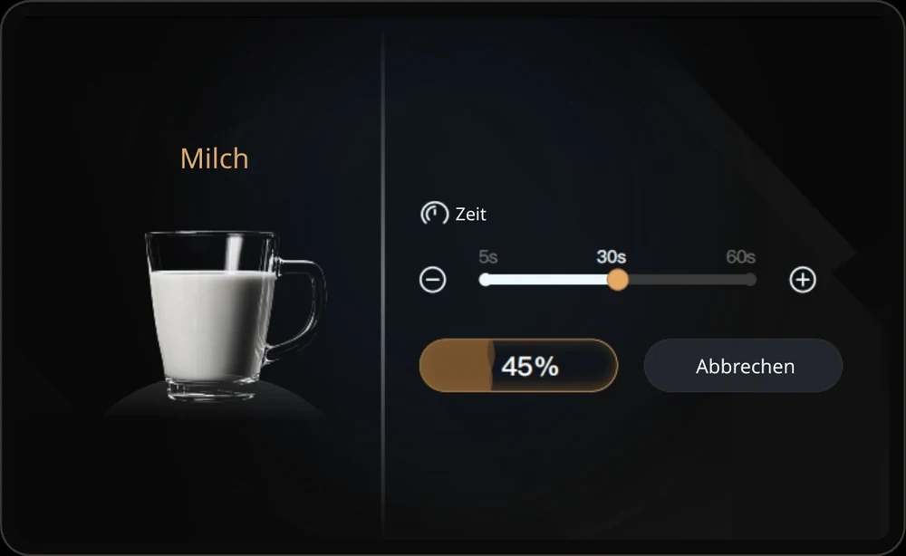
5.4 Heißwasser
- Tippen Sie auf dem Startbildschirm auf das Heißwasser-Symbol und stellen Sie Temperatur und Menge ein. Tippen Sie auf „Start“; die Einstellungen werden automatisch gespeichert.
- Das Gerät gibt Heißwasser aus und zeigt den Fortschritt in Prozent an. Bei 100 % bestätigt eine Meldung, dass der Vorgang abgeschlossen ist. Mit dem Abbrechen-Symbol können Sie jederzeit stoppen.
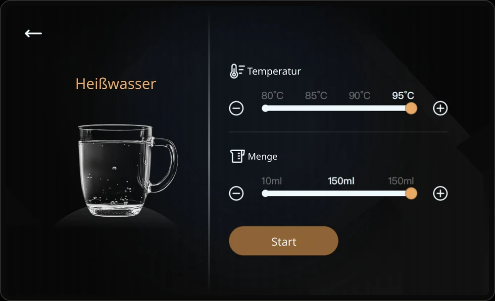
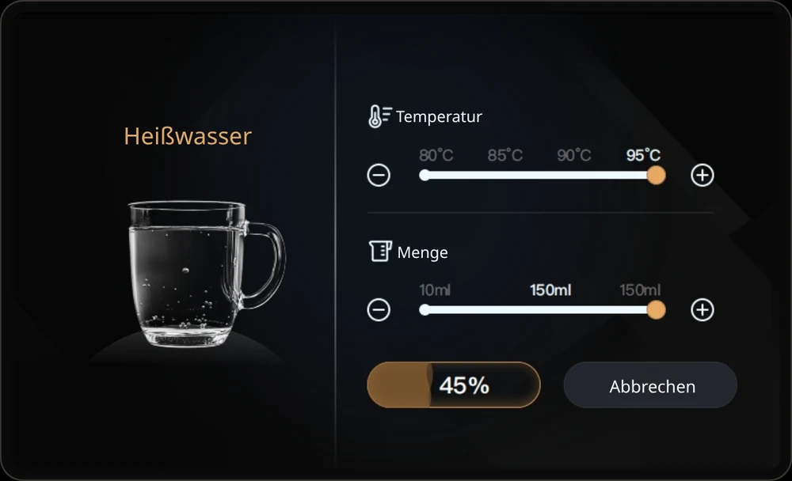
5.5 Benutzerprofile
Tippen Sie oben links auf das Avatar-Symbol und wählen Sie Benutzer 1, 2, 3 oder 4. Jeder Benutzer kann eigene Getränkeeinstellungen festlegen und speichern.
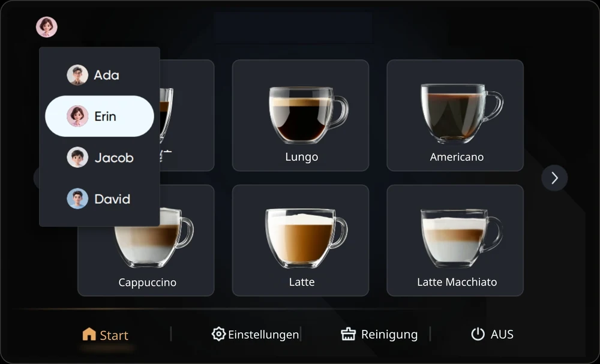
5.6 Mahlgrad einstellen
Der Mahlgrad ist ab Werk optimal eingestellt, sodass Sie sofort Kaffee zubereiten können. Schmeckt der Kaffee dünn mit wenig Crema oder läuft er nach einigen Tassen nur noch sehr langsam, tropfenweise, stellen Sie den Mahlgrad ein:
- Öffnen Sie den Deckel des Bohnenbehälters.
- Starten Sie eine Kaffeezubereitung. Sobald Sie das Mahlwerk hören, drehen Sie den Mahlgrad-Drehknopf auf die gewünschte Stellung (1 ist am feinsten, 5 am gröbsten).
- Beobachten Sie, wie schnell der Kaffee fließt. Fließt er zu langsam oder gar nicht, drehen Sie den Knopf Richtung 5. Für einen kräftigen Kaffee mit dichter Crema drehen Sie ihn eine Stufe Richtung 1. Ändern Sie jeweils nur eine Stufe, um das Gerät nicht zu beschädigen.
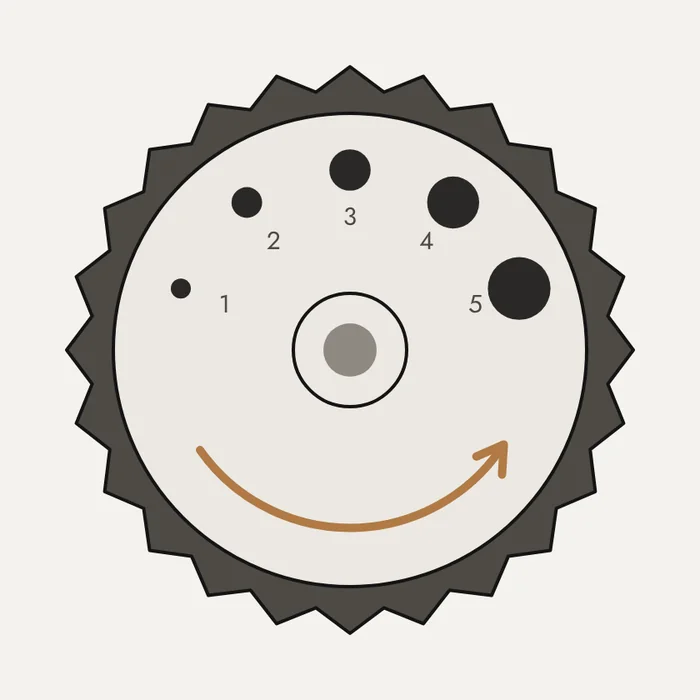
Achtung. Ein neuer Mahlgrad wirkt erst nach mindestens zwei Tassen. Ist das Ergebnis noch nicht richtig, drehen Sie den Knopf eine weitere Stufe. Auch die Beschaffenheit des Kaffeesatzes im Tresterbehälter kann Ihnen als Orientierung dienen.
6. Einstellungen
Tippen Sie unten auf dem Bildschirm auf das Einstellungen-Symbol, um das Einstellungsmenü zu öffnen.
Sprache. Das Gerät unterstützt mehrere Bediensprachen; wählen Sie die gewünschte aus.
Getränkeeinstellungen. Hier ändern Sie alle Getränkeeinstellungen des aktuellen Benutzers; Änderungen werden automatisch in seinem Profil gespeichert.
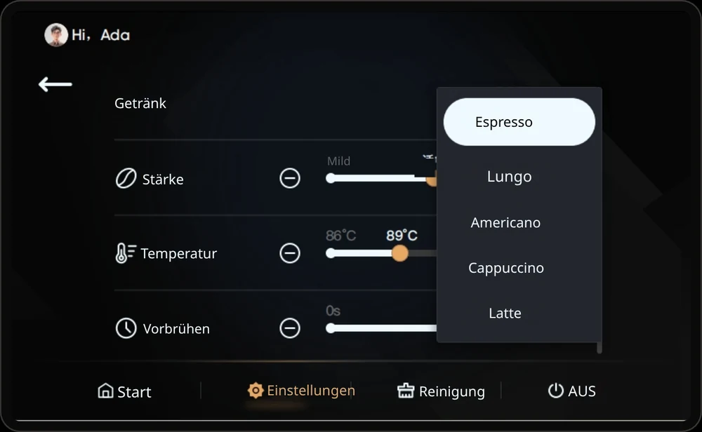
Automatische Abschaltung. Legt die Zeit für die automatische Abschaltung fest. Nach dieser Zeit im Standby schalten sich Gerät und Bildschirm aus; berühren Sie den Bildschirm, um es zu wecken.
Standby-Beleuchtung. Bildschirmhelligkeit im Standby: voll, halb oder aus.
Anpassen während der Zubereitung. Ist die Funktion eingeschaltet, können Getränkeeinstellungen während der Zubereitung geändert werden (außer der Brühtemperatur). Ist sie ausgeschaltet, sind die Einstellungen während der Zubereitung gesperrt.
Ton. Schaltet die Signaltöne ein oder aus.
Entkalkungsstufe. Fünf Stufen; bei OFF ist die Erinnerung deaktiviert. Erreicht der gesamte Wasserverbrauch die eingestellte Menge, erscheint eine Entkalkungserinnerung. Menge pro Stufe: 1 — 80 l, 2 — 60 l, 3 — 40 l, 4 — 20 l, 5 — 10 l.
Service-Einstellungen. Nur für den Herstellerservice.
Werkseinstellungen. Setzt alle Einstellungen auf die Werkswerte zurück: Kaffeeeinstellungen, Sprache, Getränke, automatische Abschaltung, Helligkeit, Anpassen während der Zubereitung, Ton und Entkalkungsstufe.
Getränkezähler. Gesamtzahl der zubereiteten Getränke sowie die Anzahl je Getränk.
Anzahl Entkalkungen. Wie oft die Entkalkung durchgeführt wurde.
7. Reinigung und Pflege
7.1 Automatische Reinigung
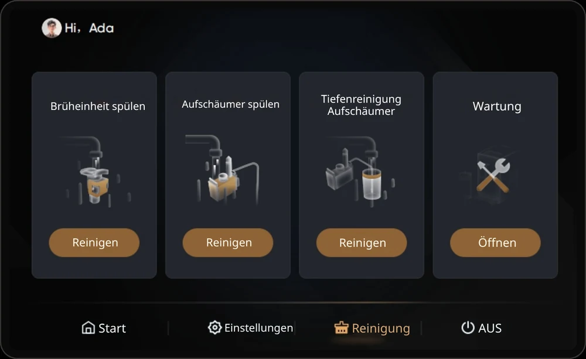
7.1.1 Schnellspülung der Brüheinheit. Der Boiler heizt auf und die Pumpe spült Wasser durch die Brüheinheit. Während des Spülens läuft Abwasser aus dem Kaffeeauslauf.
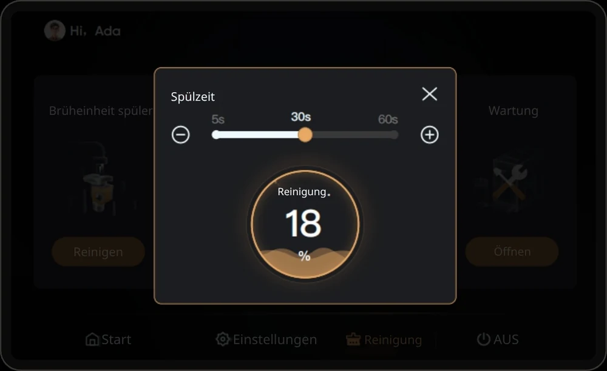
7.1.2 Schnellspülung des Milchaufschäumers. Der Boiler heizt auf und die Pumpe spült den Milchaufschäumer. Abwasser läuft aus dem Kaffeeauslauf.
7.1.3 Tiefenreinigung des Milchaufschäumers. Waschen Sie gemäß den Hinweisen auf dem Bildschirm den Milchbehälter gründlich aus, füllen Sie ihn mit Frischwasser und tippen Sie auf das Reinigungssymbol. Das Gerät reinigt den Aufschäumer automatisch gründlich; die Reinigungszeit ist einstellbar. Abwasser läuft aus dem Kaffeeauslauf.
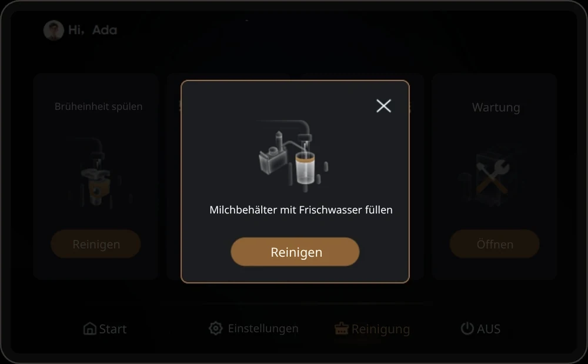
7.1.4 Gerätewartung. Umfasst die Tiefenreinigung der Brüheinheit (mit Tablette), die Tiefenreinigung des Milchsystems (mit Tablette) und das Entkalken.
- Tiefenreinigung der Brüheinheit (Tablette). Starten Sie das Programm, legen Sie bei Aufforderung eine Reinigungstablette in die Brüheinheit und tippen Sie auf „Weiter“. Während der Reinigung läuft Abwasser aus dem Kaffeeauslauf.
- Tiefenreinigung des Milchsystems (Tablette). Starten Sie das Programm, geben Sie bei Aufforderung eine Milchsystem-Reinigungstablette und Frischwasser in den Milchbehälter und tippen Sie dann auf „Weiter“. Abwasser läuft aus dem Kaffeeauslauf. Waschen Sie anschließend den Behälter aus, füllen Sie ihn erneut mit Frischwasser und führen Sie die Reinigung nochmals durch, um Reinigerreste zu entfernen.
- Entkalken. Tippen Sie auf „Jetzt entkalken“. Füllen Sie bei Aufforderung Entkalker für Kaffeevollautomaten und Frischwasser bis MAX in den Wassertank. Stellen Sie ein großes Gefäß unter den Kaffeeauslauf und tippen Sie auf „Weiter“. Behalten Sie das Gefäß im Blick, damit es nicht überläuft. Waschen Sie anschließend den Tank aus, füllen Sie ihn mit Frischwasser und führen Sie eine Spülung durch, um Entkalkerreste zu entfernen.
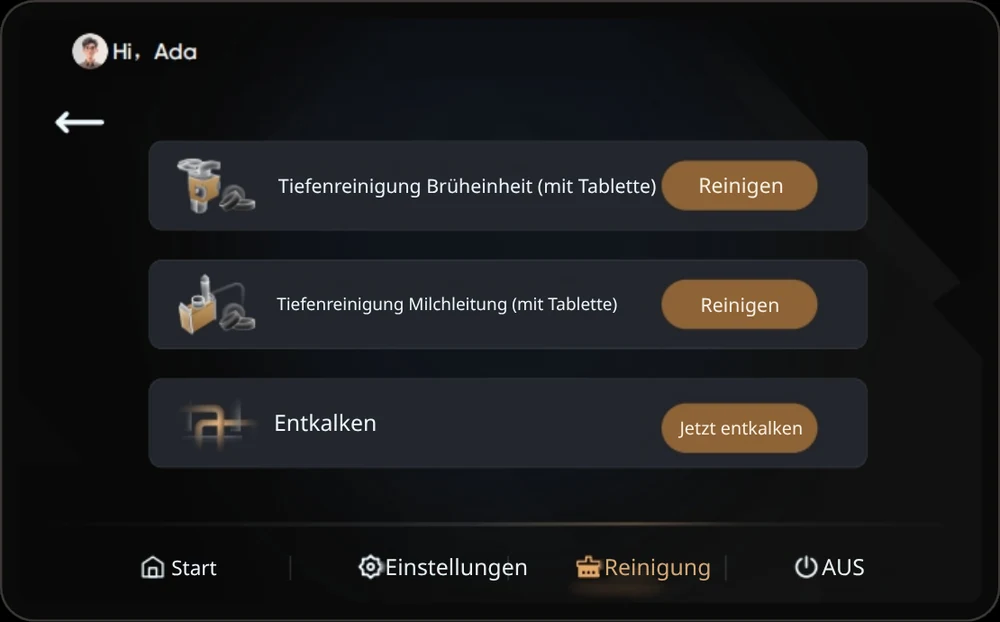
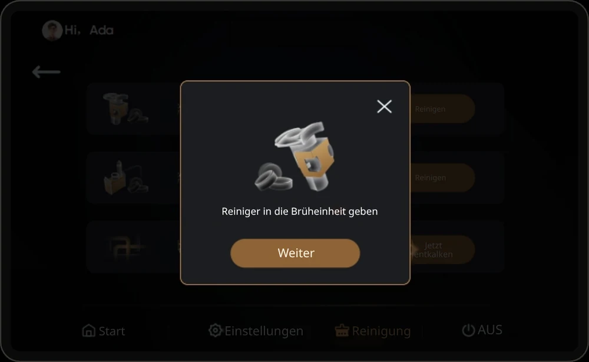
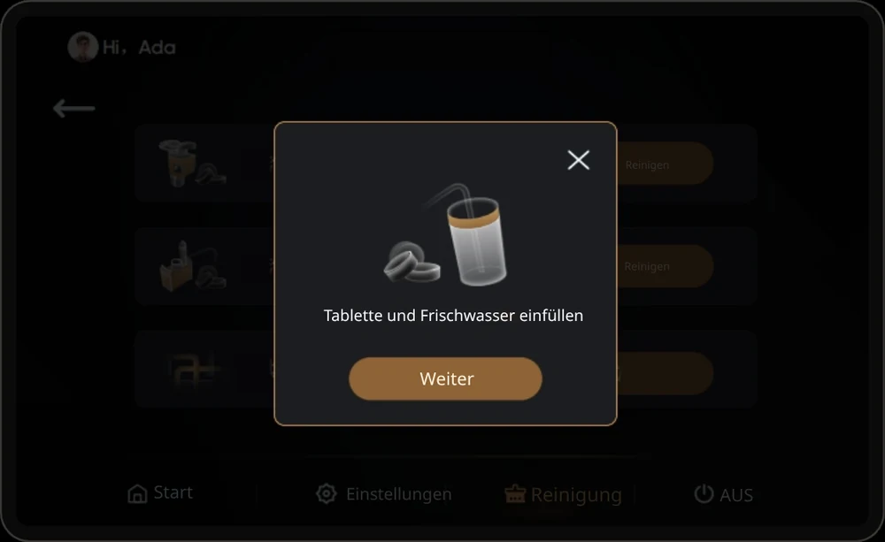
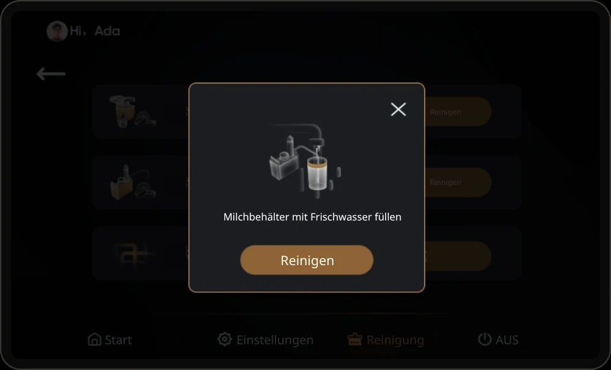
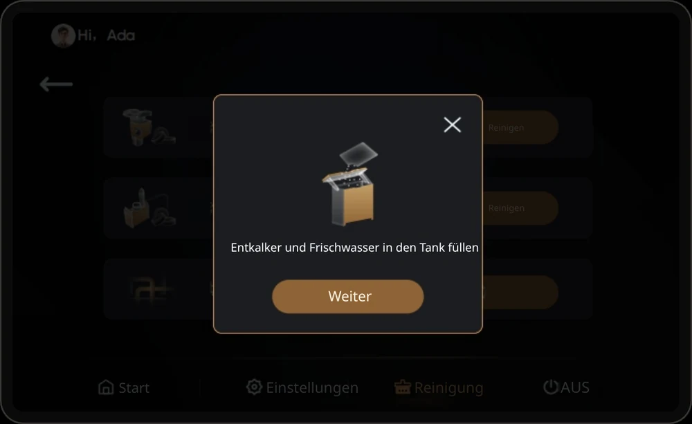
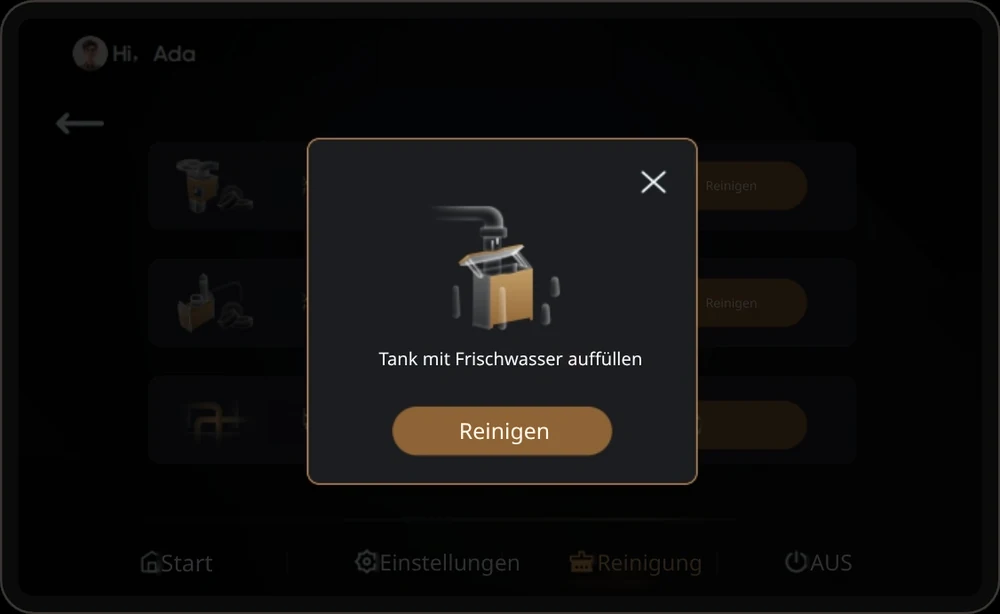
7.2 Manuelle Reinigung
Reinigen Sie diese Teile regelmäßig:
- Tresterbehälter — nach jedem Leeren.
- Abwasserschale komplett (Schale, Abdeckung, Tropfschale) — leeren und alle Teile waschen, wenn der Schwimmer steigt.
- Wassertank — regelmäßig mit einem weichen Tuch und mildem Spülmittel waschen (einmal im Monat empfohlen).
- Kaffeeauslauf — regelmäßig mit einem Schwamm oder Tuch abwischen; Verstopfungen mit einem Zahnstocher lösen.
- Bohnenbehälter — gelegentlich mit einem trockenen Tuch auswischen (einmal im Monat empfohlen).
-
Kaffeepulverschacht (einmal im Monat oder bei Verstopfung).
Hinweis. Nur bei ausgeschaltetem Gerät und gezogenem Netzstecker durchführen.
① Öffnen Sie die Seitentür. ② Reinigen Sie den Schacht mit der Bürste. ③ Entfernen Sie sichtbaren Kaffeesatz im Gerät, bei Bedarf mit einem Staubsauger. ④ Entfernen Sie Kaffeesatz und Schmutz aus der Abwasserschale.
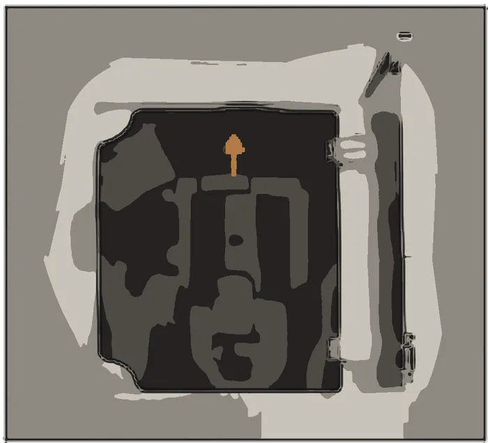
Kaffeepulverschacht hinter der Seitentür -
Manuelle Reinigung des Milchaufschäumers (einmal im Monat empfohlen).
① Schalten Sie das Gerät aus. ② Trennen Sie den Milchschlauch vom Aufschäumer. ③ Drücken Sie die linke und rechte Klammer nach innen und ziehen Sie den gesamten Aufschäumer nach unten ab. ④ Zerlegen Sie den Aufschäumer und spülen Sie alle Teile unter fließendem Wasser ab; legen Sie sie bei Bedarf vorher 10 Minuten in Milchsystemreiniger ein.
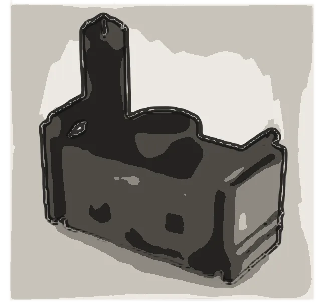
Milchaufschäumer komplett 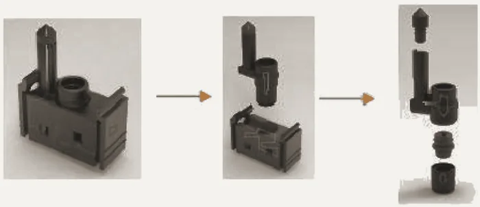
Zerlegen des Aufschäumers Hinweis. Spülen Sie den Luftschlitz am Luftregler gründlich und beschädigen Sie ihn nicht, sonst funktioniert das Milchaufschäumen nicht richtig.
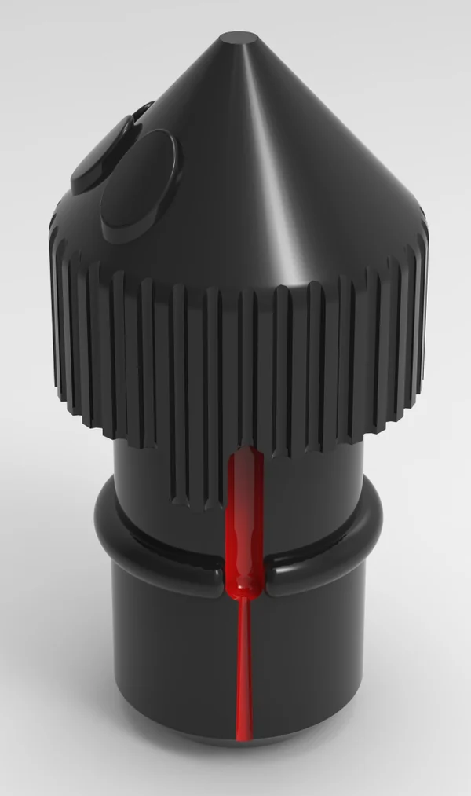
Luftschlitz am Luftregler ⑤ Setzen Sie alle Teile in umgekehrter Reihenfolge wieder zusammen und prüfen Sie, ob der Luftregler richtig sitzt. Er hat 5 Stellungen: fein für dichten, seidigen Schaum, grob für größere Blasen. Stellen Sie ihn auf den gewünschten Schaum ein.
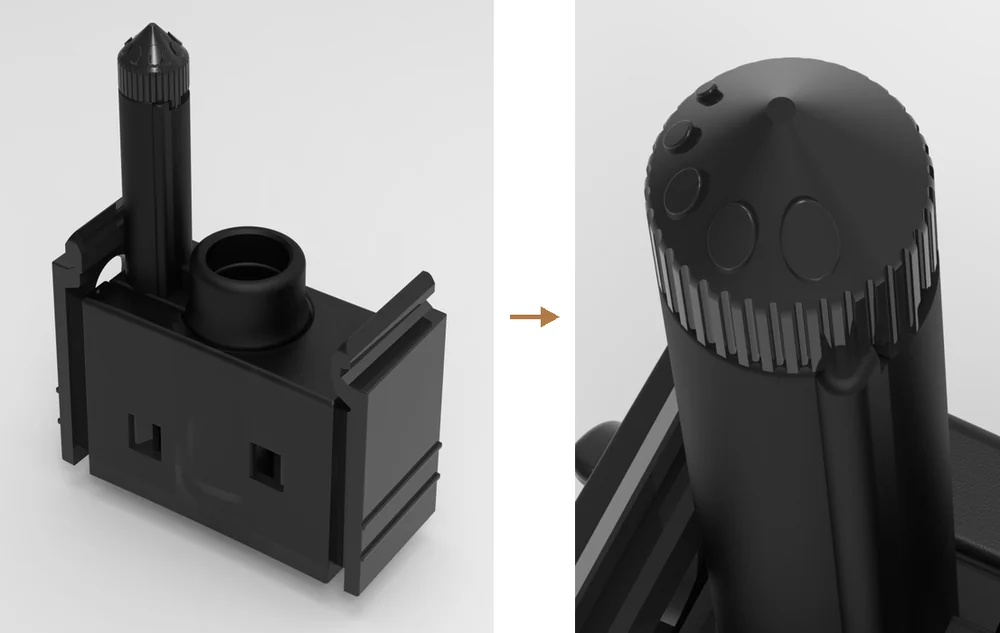
Zusammenbau und Luftregler -
Manuelle Reinigung der Brüheinheit (alle zwei Wochen empfohlen).
① Schalten Sie das Gerät aus und öffnen Sie die Seitentür. ② Drücken Sie die beiden orangefarbenen Tasten an den Seiten der Brüheinheit in Richtung PUSH und ziehen Sie die Einheit heraus. ③ Legen Sie die Einheit 5 Minuten in sauberes Wasser und spülen Sie sie dann unter dem Wasserhahn ab. Geben Sie sie nicht in die Spülmaschine und verwenden Sie kein Spülmittel. ④ Bürsten Sie bei geöffneter Tür sichtbaren Kaffeesatz im Gerät weg. ⑤ Drücken Sie den Brühkopf der sauberen Einheit ganz nach unten, schieben Sie die Einheit wieder ein und drücken Sie auf die PUSH-Markierung, bis sie hörbar einrastet.
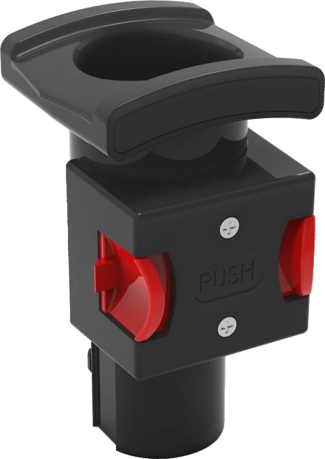
Brüheinheit: beide PUSH-Tasten drücken Hinweis. Achten Sie darauf, dass beide orangefarbenen Tasten in ihre Ausgangsstellung zurückgekehrt sind, sonst kann das Gerät beschädigt werden.
7.3 Mahlscheiben ausbauen, einsetzen und reinigen
Kommt kein Kaffeepulver heraus, ist der Schacht verstopft, steckt ein Fremdkörper im Mahlwerk oder sind die Mahlscheiben falsch eingesetzt:
- Schalten Sie das Gerät aus und entfernen Sie alle Bohnen aus dem Bohnenbehälter.
- Drehen Sie die Mahlwerksabdeckung gegen den Uhrzeigersinn, bis die Entriegelungsmarkierung mit der Rippe im Bohnenbehälter übereinstimmt, und heben Sie die Abdeckung ab.
- Drehen Sie den Mahlgrad-Drehknopf auf 5, heben Sie ihn an und drehen Sie ihn im Uhrzeigersinn in die Entriegelungsstellung, um die Mahlscheiben freizugeben.
- Ziehen Sie den Griff der Mahlscheibe nach oben, um die Mahlscheibeneinheit zu entnehmen.
- Entfernen Sie alle Kaffeepulver- und Bohnenreste aus der Mahlkammer; ein Staubsauger und ein kleiner Schlitzschraubendreher helfen dabei. Reinigen Sie gründlich, sonst sitzen die Mahlscheiben nicht richtig.
- Setzen Sie die Mahlscheibeneinheit wieder ein. Drehen Sie den Mahlgrad-Drehknopf gegen den Uhrzeigersinn auf 5, heben Sie ihn an und drehen Sie weiter gegen den Uhrzeigersinn auf 3 oder eine andere passende Stufe; ziehen Sie dann erneut am Griff der Mahlscheibe. Lässt sich die Mahlscheibenhülse nicht herausziehen, ist sie richtig verriegelt. Kommt sie heraus, ist sie nicht vollständig verriegelt: Drehen Sie den Knopf zum Entriegeln im Uhrzeigersinn, drücken Sie die Mahlscheibe fest ein und drehen Sie den Knopf gegen den Uhrzeigersinn auf 3 oder eine andere passende Stufe.
- Setzen Sie die Mahlwerksabdeckung wieder auf und drehen Sie sie im Uhrzeigersinn, bis die Verriegelungsmarkierung mit der Rippe im Bohnenbehälter übereinstimmt.
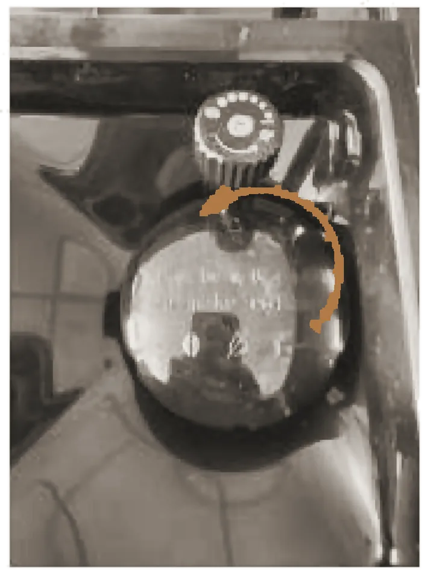
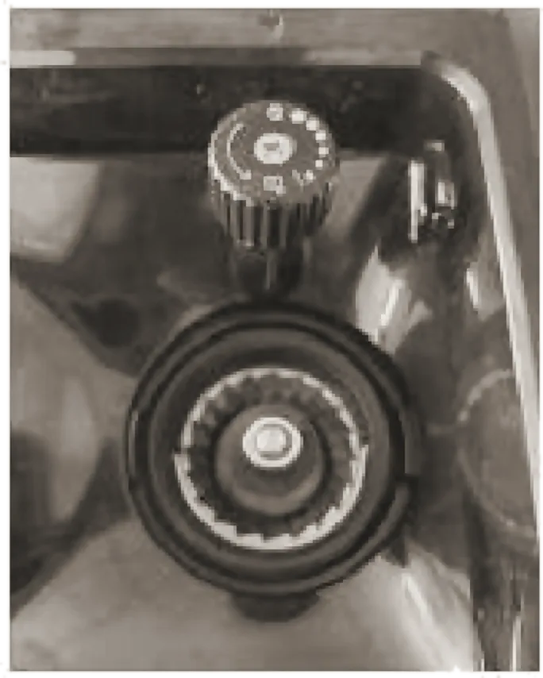
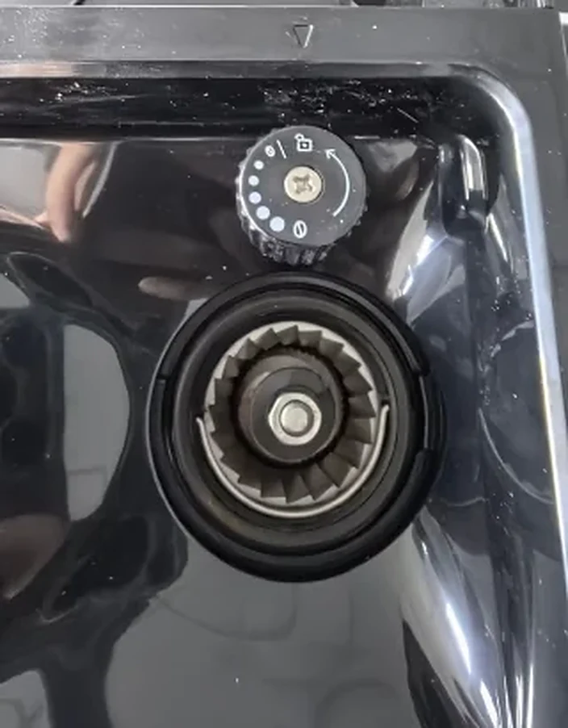
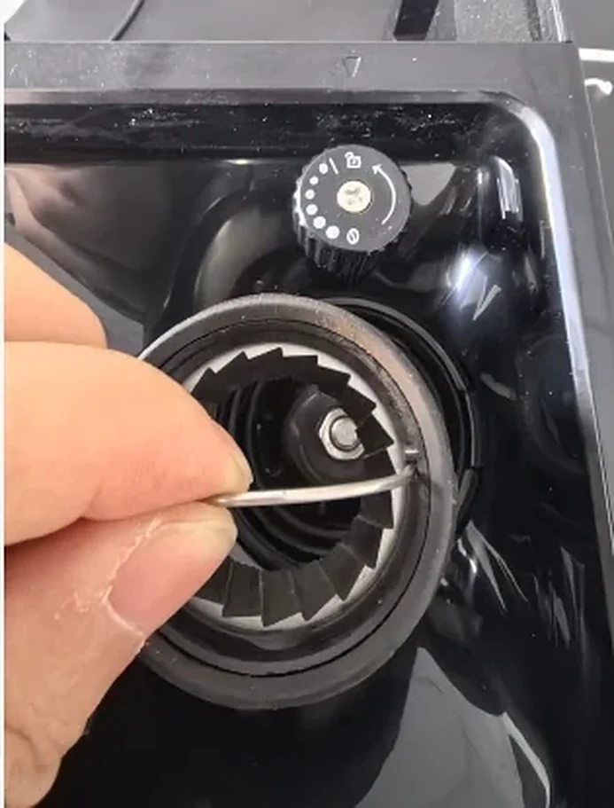
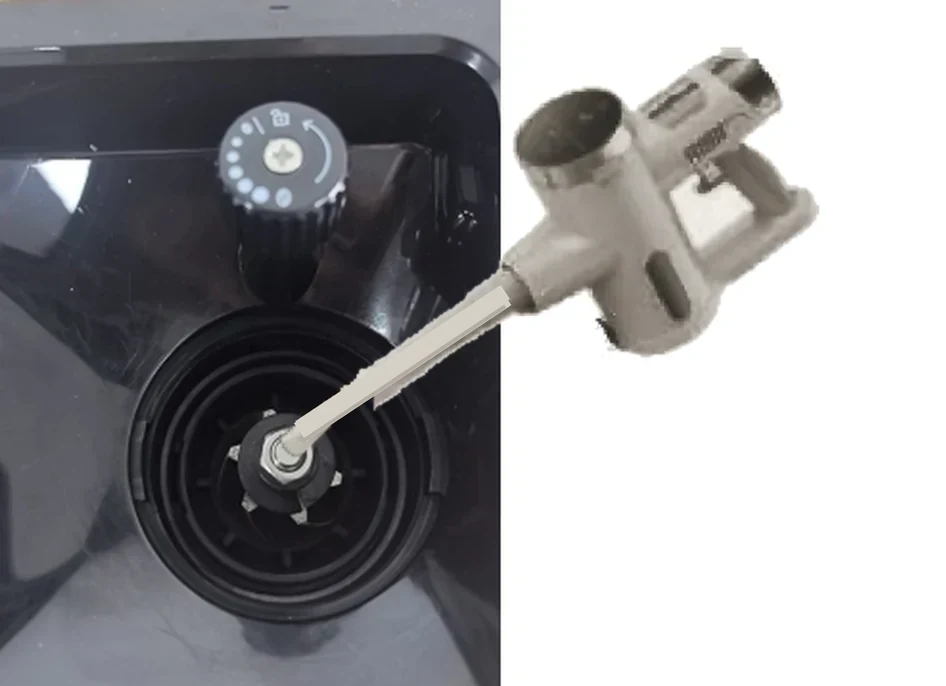
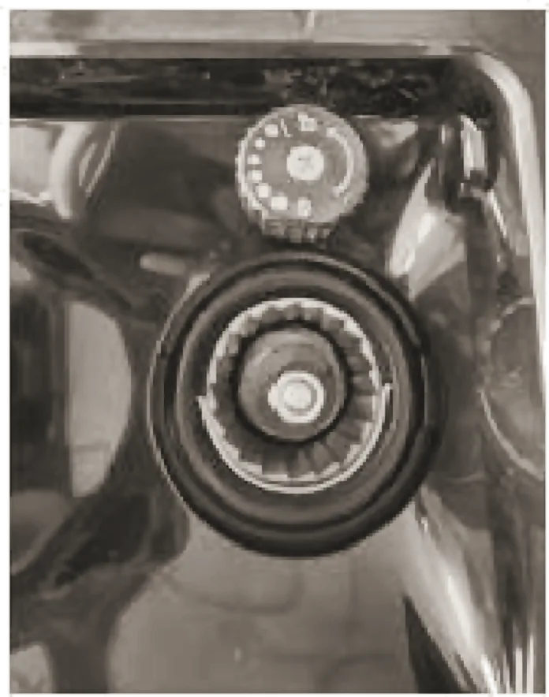
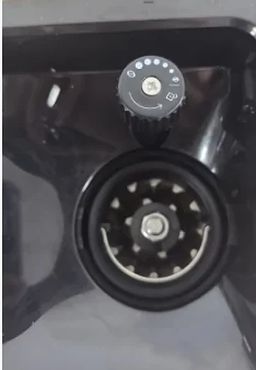
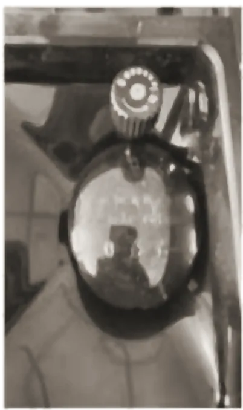
8. Transport und Entsorgung
8.1 Transport
- Bewahren Sie die Originalverpackung für spätere Transporte auf.
- Lassen Sie vor dem Transport das gesamte Restwasser aus dem Kaffeevollautomaten ab, um Schäden zu vermeiden.
- Leeren Sie den Wassertank und die Abwasserschale und wischen Sie das Gerät innen und außen ab.
8.2 Kaffeereste
Kaffeereste sind vollständig organisch und können mit dem Hausmüll entsorgt werden.
8.3 Abwasser
Abwasser aus Zubereitung und Reinigung entspricht den Anforderungen an häusliches Abwasser und kann in den normalen Abfluss gegeben werden.
8.4 Entsorgung des Geräts
- Das Gerät besteht aus hochwertigen, recycelbaren Materialien.
- Entsorgen Sie das Gerät nicht mit dem Hausmüll. Beachten Sie die örtlichen Vorschriften zur Abfallentsorgung.
9. Störungsbehebung
| Problem | Ursache | Lösung |
|---|---|---|
| Das Gerät lässt sich nicht einschalten | Kein Strom oder der Hauptschalter steht auf OFF | Netzkabel anschließen und den Schalter auf ON stellen |
| Fehlercode auf dem Bildschirm oder Tasten reagieren nicht | Software- oder Elektronikfehler | Ausschalten, Netzstecker ziehen, 30 Sekunden warten und wieder einschalten. Besteht das Problem weiterhin, wenden Sie sich an den Hersteller oder Händler |
| Ungewöhnliches Geräusch beim Mahlen | Fremdkörper im Mahlwerk | Wenden Sie sich an den Hersteller oder Händler |
| Kaffee läuft langsam oder gar nicht | Mahlgrad zu fein | Mahlgrad-Drehknopf gröber stellen (jeweils eine Stufe). Die Änderung wirkt nach mindestens zwei Tassen |
| Kaffee läuft langsam oder gar nicht | Wasserkreislauf nicht gefüllt | Netztaste gedrückt halten, um die automatische Spülung beim Ausschalten auszuführen, dann erneut Kaffee zubereiten |
| Kaffee läuft langsam oder gar nicht | Brüheinheit verschmutzt | Brüheinheit gründlich reinigen |
| Kaffee läuft zu schnell und schmeckt dünn | Mahlgrad zu grob | Mahlgrad-Drehknopf feiner stellen (jeweils eine Stufe). Die Änderung wirkt nach mindestens zwei Tassen |
| Die Brüheinheit lässt sich nicht herausnehmen | Brüheinheit nicht in Grundstellung | Gerät neu starten und alle Warnungen beheben; die Einheit fährt automatisch in die Grundstellung |
| Statt Kaffee kommt klares Wasser | Bohnen werden nicht gemahlen; Bohnen sind feucht | Zuerst einen gröberen Mahlgrad einstellen; hilft das nicht, den Service kontaktieren |
| „Brüheinheit nicht eingesetzt“ nach dem Einsetzen | Brüheinheit nicht verriegelt | Einheit einsetzen und auf die PUSH-Markierung drücken, bis sie einrastet |
| Zu wenig Kaffee | Undichtigkeit in den inneren Schläuchen | Wenden Sie sich an den Hersteller oder Händler |
| Zu wenig Kaffee | Wasserkreislauf durch Kalk verstopft | Das vollständige Entkalkungsprogramm durchführen |
| Milch wird nicht angesaugt | Luftleck im Aufschäumer; zu viel Luft; Milchschlauch verstopft | Alle Teile des Aufschäumers prüfen und richtig einsetzen; Luftregler niedriger stellen; Milchschlauch und Anschlüsse reinigen |
10. Haftung und Garantie
Der Hersteller übernimmt keine Gewährleistung und keine Haftung für Personen- oder Sachschäden in folgenden Fällen:
- Nicht bestimmungsgemäßer oder regelwidriger Gebrauch des Geräts.
- Unsachgemäße Aufstellung, Inbetriebnahme, Bedienung, Reinigung oder Wartung.
- Nichtbeachtung der Hinweise in dieser Anleitung.
- Betrieb des Kaffeevollautomaten unter nicht normalen Bedingungen.
- Verwendung von Nicht-Original-Ersatzteilen.
- Schäden durch Fremdkörper, Unfälle, vorsätzliche Handlungen oder höhere Gewalt.